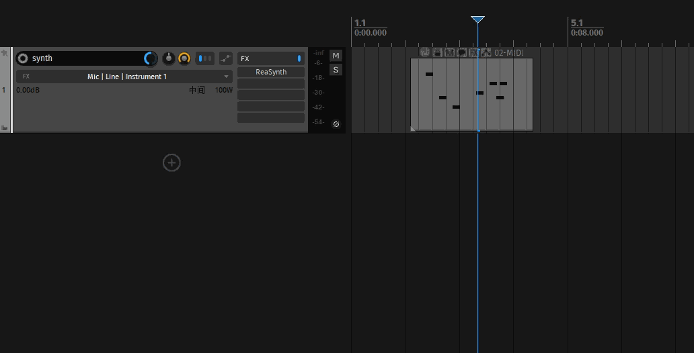
01 GIF · REAL REAPERGIF · 实机演示Render渲染
Smart Bounce智能合并渲染
Render selected material to a new WAV with automated tail handling.将选中素材智能合并为 WAV，处理渲染尾音。
Browse, organize, audition and deliver large sound libraries without leaving REAPER.
GitHub project ↗ — Full README, source code and project documentation.
Explore the REAPER tools in motion ↓观看 REAPER Lua 工具操作动图 ↓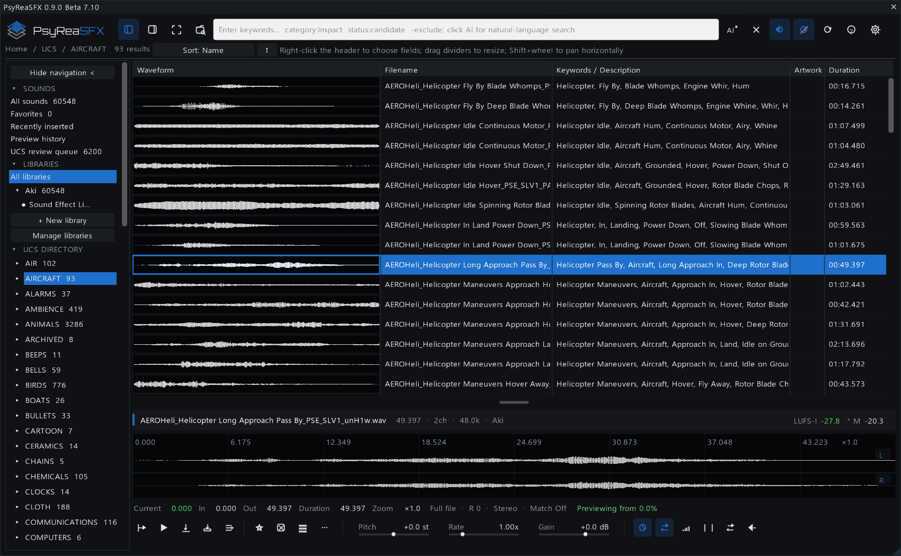
THE TOOLS · IN MOTIONREAPER 工具 · 动态演示
Real recordings of the Psysia ReaScripts inside REAPER. Explore twelve practical tools—then add only the ones you need through ReaPack.来自 REAPER 实际操作的十二个 Lua 工具动图。直观看到操作效果，再通过 ReaPack 安装所需脚本。

01 GIF · REAL REAPERGIF · 实机演示Render selected material to a new WAV with automated tail handling.将选中素材智能合并为 WAV，处理渲染尾音。
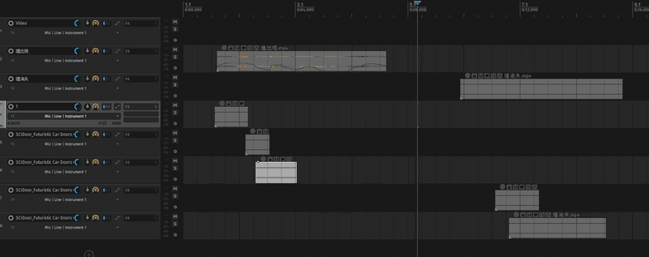
02 GIF · REAL REAPERGIF · 实机演示Make video item labels readable directly inside the arrange view.在编排区直接清晰显示视频素材对应的轨道名称。
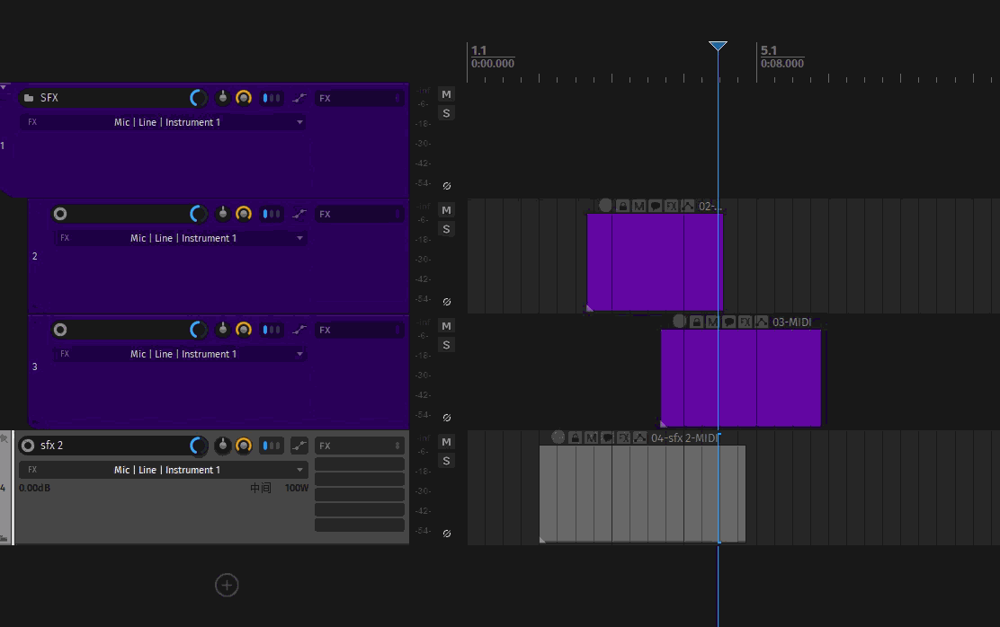
03 GIF · REAL REAPERGIF · 实机演示Build regions and map them to the right render targets.根据轨道与文件夹结构批量建立区域及渲染矩阵。
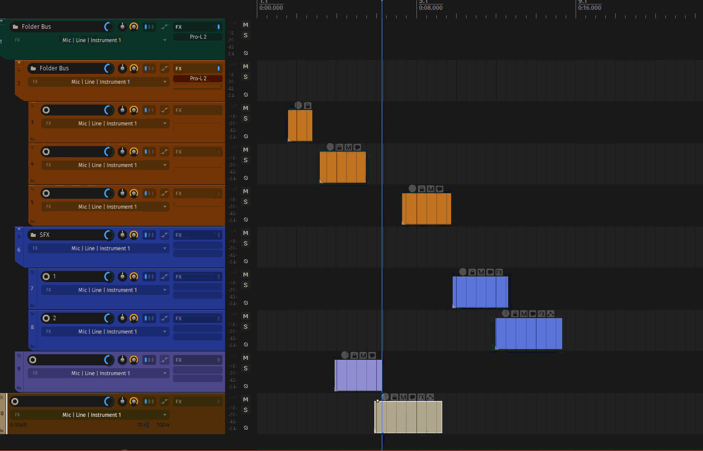
04 GIF · REAL REAPERGIF · 实机演示Move through folder display states without losing your hierarchy.按文件夹层级轮换折叠状态，保持工程结构清晰。
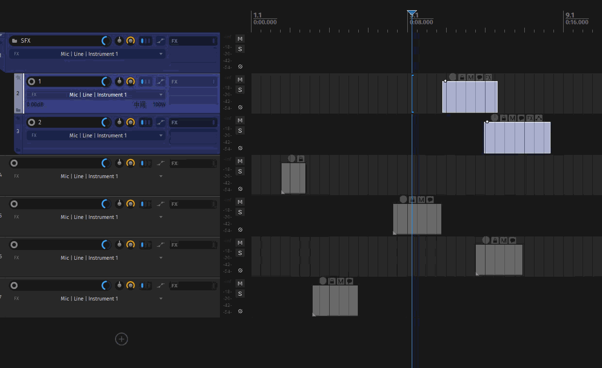
05 ACTION DEMO操作动图Order tracks using the earliest item in each folder-aware group.按素材最早位置排序，同时保留文件夹分组。
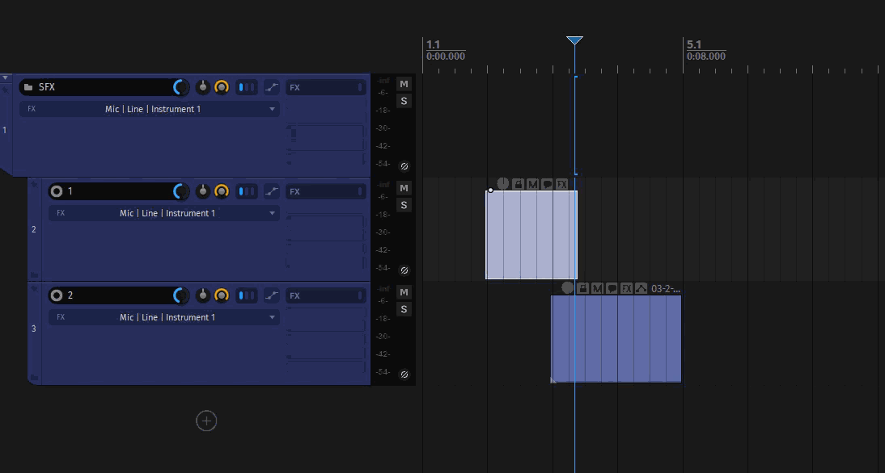
06 ACTION DEMO操作动图Name regions from the closest parent folder and prepare the matrix.根据最近父级文件夹命名区域并配置渲染矩阵。
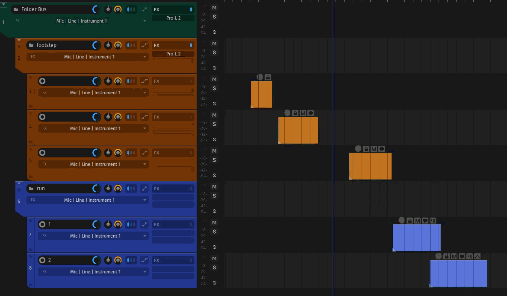
07 ACTION DEMO操作动图Rename selected child tracks consistently from their parent folder.依据父文件夹名称快速批量命名所选轨道。
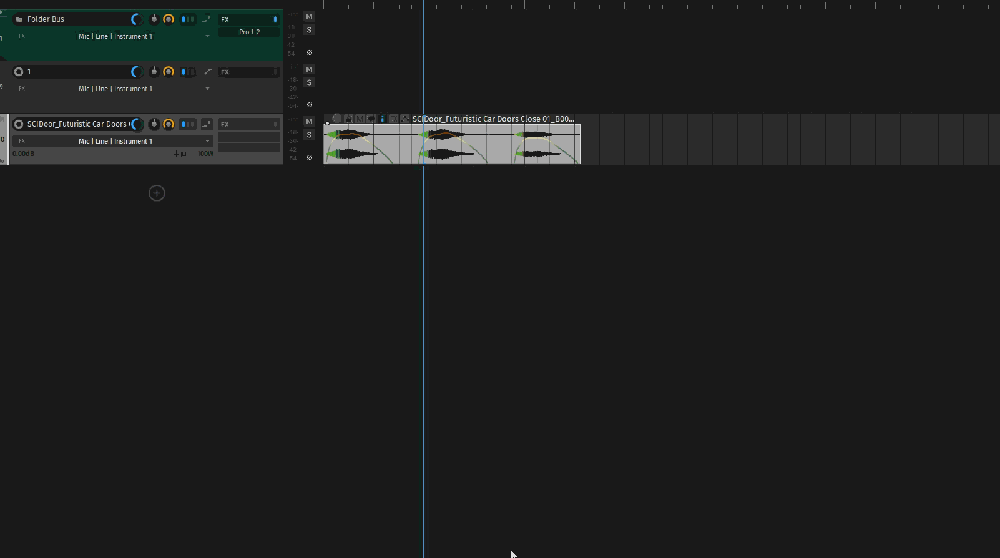
08 ACTION DEMO操作动图Move selected audio items into their own clean tracks.将选中音频素材快速拆分到新的独立轨道。
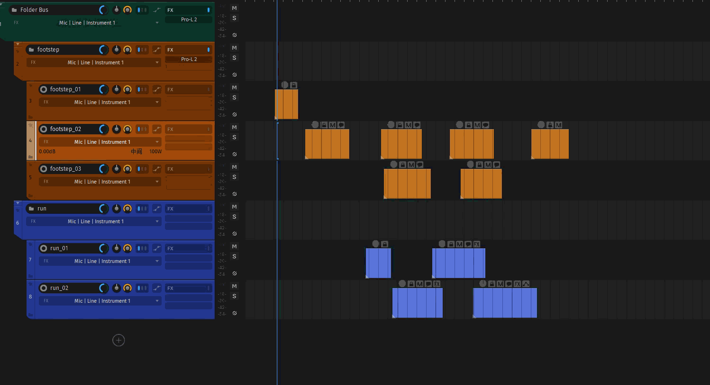
09 ACTION DEMO操作动图Close empty space between selected items in one action.一键消除选中素材之间的空白间隙。
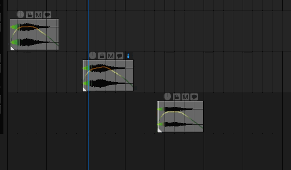
10 ACTION DEMO操作动图Reverse selected items in place with a single reversible action.在当前位置快速反转选中素材。
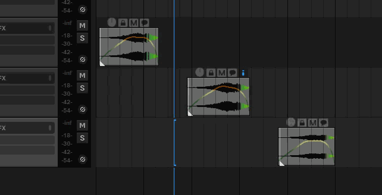
11 ACTION DEMO操作动图Switch the visible waveform analysis without breaking your flow.在 LUFS-M 与频谱显示之间快速切换。
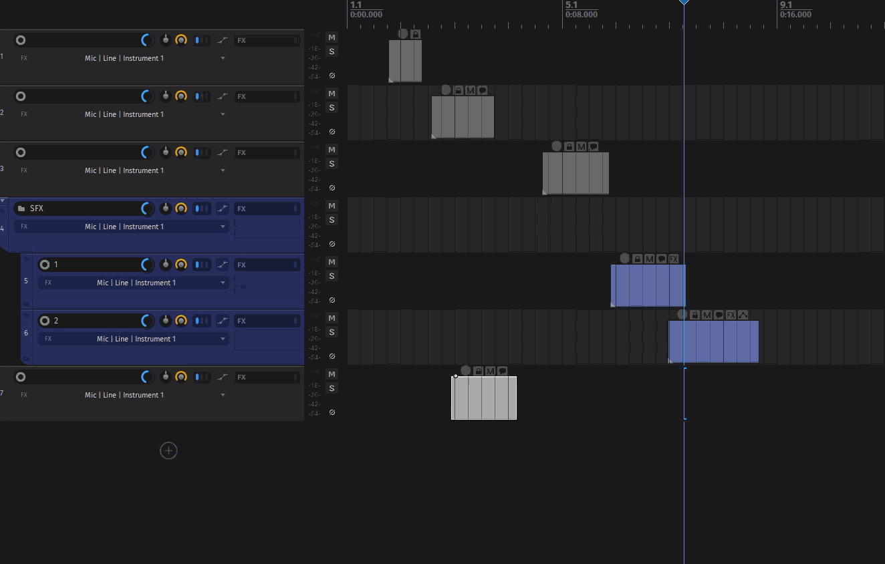
12 ACTION DEMO操作动图Wrap selected tracks in a parent bus with Pro-L 2 ready.为选中轨道创建父级文件夹并加载 Pro-L 2。
CHOOSE YOUR RELEASE TRACK
The default ReaPack release for everyday production work.
Get Stable ↗AI search now saves independent named API presets for DeepSeek and compatible services, plus local EfficientAT similarity via the required neural package.
Enable pre-releases for PsyReaSFX.lua Beta 7.17. Neural retrieval also requires the separate PsyReaSFX Neural Similarity package. ReaPack lists the latest Beta, 0.8.5 and 0.7.23; older releases stay on GitHub.
View preview ↗ Download complete neural ZIP · Windows x64 ↗ Neural package: ReaPack / ZIP instructions ↓WHAT CHANGED
REAPER / Lua editions only, not the Desktop companion. Beta includes the Stable feature set; “—” means unavailable in that version.
On small screens, swipe the table horizontally to compare all versions.
| Feature | 0.7.23 Stable | 0.8.5 Stable | Latest Beta 0.9.0 Beta 7.17 |
|---|---|---|---|
| Browse, waveform audition, metadata, collections and Transfer | Included | Retained | Retained |
| Interrupted-scan recovery, retries, backups and cache checks | — | Added | Retained and refined |
| Missing/duplicate checks, source relinking and project usage | — | Added | Retained |
| Incremental persistence and frame-budgeted large-library tasks | Earlier implementation | Hardened | Further startup optimization |
| Official UCS classification, review queue and virtual folders | Basic UCS fields only | Basic UCS fields only | Added |
| Spectral peak coloring | — | — | Added; opt-in |
| Audio-content similar-sound retrieval | — | — | Built-in 15-feature acoustic retrieval |
| EfficientAT local neural similarity | — | — | Required neural package · Windows x64 ZIP ↗ |
| AI semantic search: local recall, paging and named API presets | — | — | Your API key/model; no neural package needed |
| Branded startup animation and live loading status | — | — | Added; no fixed intro delay |
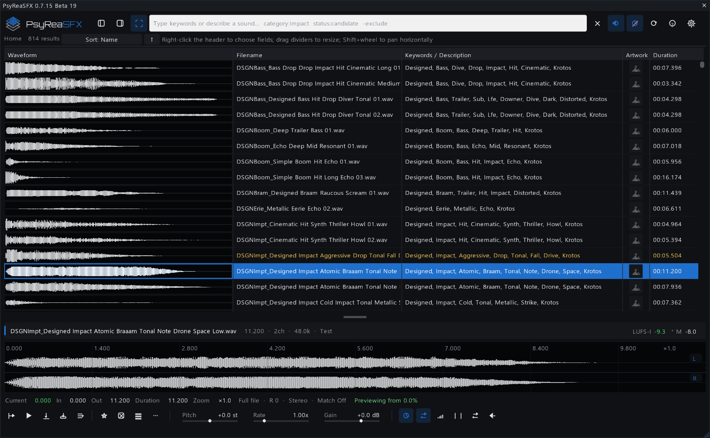
FIND BY STRUCTURE AND SOUND
Beta 7.17 fixes gpt-6-luna request parameters through custom gateways, increases bounded probe/planner budgets, and distinguishes truncation, reasoning-only, filtering and protocol errors. One retry at most; live gateway compatibility still needs testing. Independent presets and deletion fixes remain.
THE COMPLETE SOUND-LIBRARY LOOP
Keep discovery, decisions and delivery connected instead of rebuilding context across separate tools.
Search filenames and metadata, browse indexed folders, then audition from any point in an inline waveform.
Unify multiple folders as one logical library, then use Artwork, metadata, collections and workflow states.
Inspect channel lanes, select and loop a range, tune Pitch, Rate and Gain, and compare loudness.
Insert or drag into REAPER, preserve BWF placement, or render processed variants with Transfer.
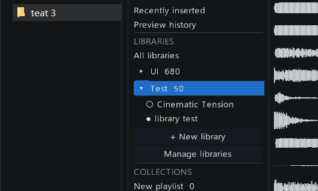
LIBRARIES THAT MATCH REAL STORAGE
Create the logical library first, then attach locations across drives over time. Each source keeps its own path, online state and Artwork.
FROM WAVEFORM TO TIMELINE
Click an inline waveform to start at that exact moment. Build a precise range in the detailed preview, audition it, then drag the selection into the REAPER arrange view.
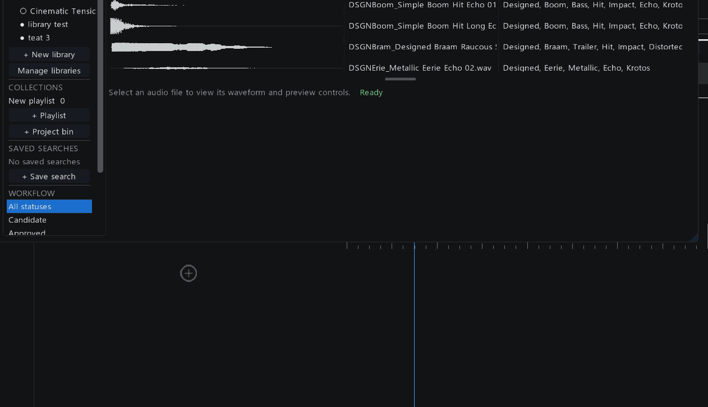
TRANSFER
Turn the full source, a waveform selection or a controlled batch of variants into new files with repeatable settings.
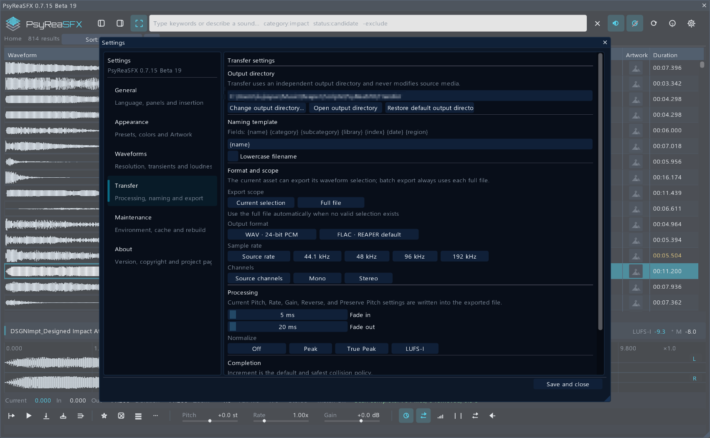
DESIGNED FOR DEPTH
Edit a non-destructive database, pin cover art and keep source files safe.
Combine text, library, UCS fields, marks and workflow states.
Build playlists, project bins, favorites and reusable saved searches.
Visible-first work, bounded queues and persistent waveform caches keep browsing responsive.
Read mono, stereo and up to eight detailed waveform lanes with focused views.
Insert on the current track, a new track, the BWF position or drag the selected range.
QUICK START
Import the repository in ReaPack, synchronize, then install PsyReaSFX. Future stable updates arrive through the same URL.
GitHub project ↗ — Visit the repository for the full installation notes and project information.
https://github.com/Psysia/PsyReaSFX/raw/main/index.xml
GET THE NEWEST FEATURES
Normal synchronization does not opt you into Beta. Enable pre-releases for the main PsyReaSFX script package first.
Local neural similarity requires a separate package: Windows x64 only. Download the complete PsyReaSFX Neural Similarity ZIP (about 42.4 MB, includes model and installers), or install the separate data package through ReaPack. Updating the main script does not install it. Exact installation steps ↓. Without it, similar-sound search uses the built-in 15-feature acoustic method.
AI semantic search: no neural package required. In Settings, create, save and switch named DeepSeek / OpenAI / compatible API presets, each with an independent key and model. Enter runs normal search; the gold AI button runs semantic search. Audio is not uploaded.
Updating the main script does not require rebuilding your libraries. Beta is a testing channel; use Stable for production work when reliability is the priority.
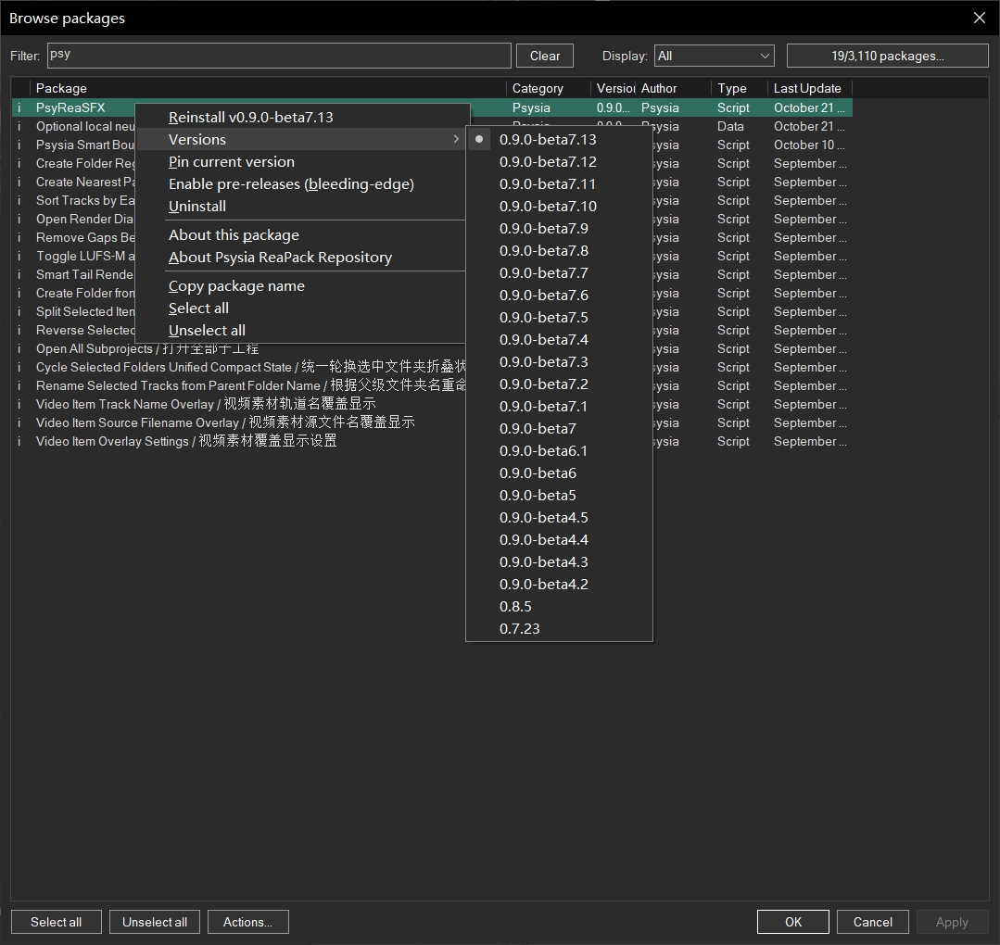
REQUIRED FOR NEURAL RETRIEVAL
One Find Similar Sounds entry, two automatic engines: built-in 15-feature acoustic search needs no download; EfficientAT neural retrieval requires PsyReaSFX Neural Similarity. AI semantic search is separate and needs your API settings, not this package.
Windows x64 · Beta 7.17 · about 42.4 MB. Includes executable, model and installers. The standalone Release EXE does not include the model. Choose one installation method below.
Installed under <REAPER Resource Path>\Data\PsyReaSFX\neural_similarity\.
Install-NeuralSimilarity.cmd, wait for success, then restart PsyReaSFX.Default manual destination: %APPDATA%\REAPER\Scripts\PsyReaSFX\neural_similarity\.
No separate Python or .NET runtime is required. Audio stays local, with no converted copies. First use builds a cancelable embedding cache and HNSW index; a missing or failed component automatically falls back to acoustic search.
LEARN & BUILD